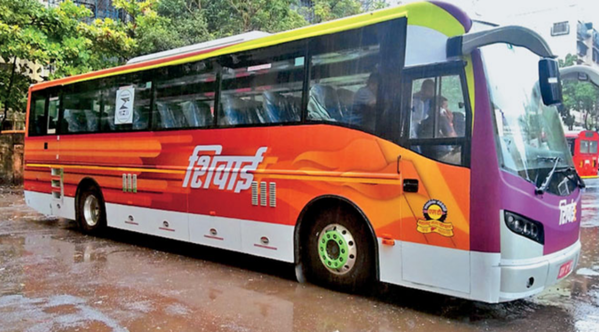

<!DOCTYPE html>
<html>
    <head>
    <title>msrtc</title>
    </head>
</html>
<body>
    <p><b><h1 align="center">MSRTC</h1>
        <figure>
        <br><br><br><br><br>
        <figurecaption align="left"><h2>Shivshahi</h2></figurecaption><br><br><br><br><br><hr><hr>
        <br><br><br><br><br>
        <figurecaption align="right"><h2>Shivai</h2></figurecaption><hr><hr>
        <br><br><br><br><br>
        <figurecaption align="right"><h2>Shivneri</h2></figurecaption><br><br><br><br><br>
        </figure><br><hr><hr>
      New Maharashtra State Road Transport Corporation (MSRTC) buses are expected to get a CCTV-based driver monitoring system along with featuring AI-enabled voice alert. As per a Times of India report, the new buses are set to use the two systems in tandem to not only monitor the drivers but to issue voice prompts should it be found that the driver is distracted.

As per the report, MSRTC managing director Shekhar Channe said that the new systems would be installed in all new buses procured by the state road transport company. He added that existing vehicles were also being considered for the systems.

Also read: Delhi Adds 150 New Electric Buses To Public Transport Fleet

Shekhar also said that the new systems were in place in the company's latest Shivai e-buses. The company recently flagged off its first intercity e-bus service between Pune and Ahmednagar on June 1 with the e-bus christened “Shivai”. The MSRTC over the course of the next three years is expected to procure as many as 3,000 new electric buses all of which are expected to get this new system.

Also read: Mumbai's BEST To Acquire 2,100 Electric Buses In Rs 3,675 Crore Order

The new systems would monitor the driver and should it notice the driver be distracted, such as talking to a passenger or on their phone, a voice alert would be issued. Additionally, Channe said that the CCTV system was also being linked to MSRTC's central control room so that staff could monitor drivers saying it would allow company officials to better monitor its drivers.

The measures are said to have been implemented in a bid to make bus journeys safer with the systems acting as a deterrent. Additionally, the CCTV system on board comes with a recording feature allowing officials to review the footage which should be useful in case of an accident
</b></p>

</body>
</html>